推理引擎
Claude Fable 5
理解长上下文、技术代码与空间意图，负责生成、修正和解释。
1M tokens 上下文
→
业务集成层
MecAgent
把模型能力接到 SOLIDWORKS、Inventor 等工业软件的真实 API。
API → 宏 → 模型
关键变化
AI 不再只是文档助手，而是能操作脚本、驱动渲染，并参与参数模型的验证。
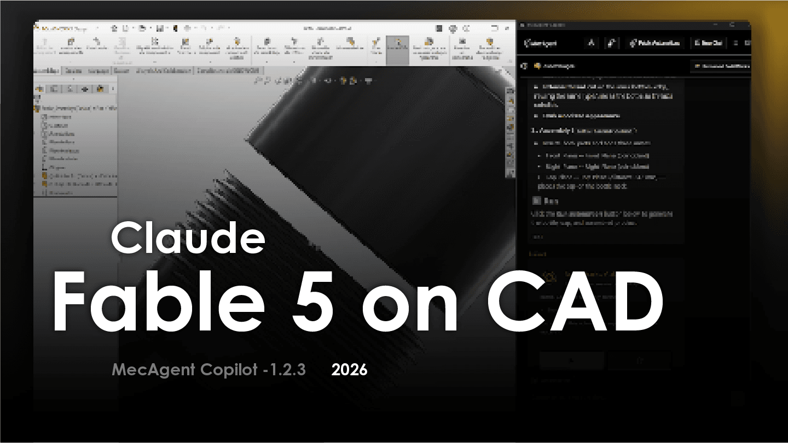
MecAgent Copilot · 1.2.0 · 2026
把自然语言，推进到可验证的 CAD 工作流
基于 MecAgent 原文与原始图表 / 界面截图
推理引擎
理解长上下文、技术代码与空间意图，负责生成、修正和解释。
业务集成层
把模型能力接到 SOLIDWORKS、Inventor 等工业软件的真实 API。
AI 不再只是文档助手，而是能操作脚本、驱动渲染，并参与参数模型的验证。
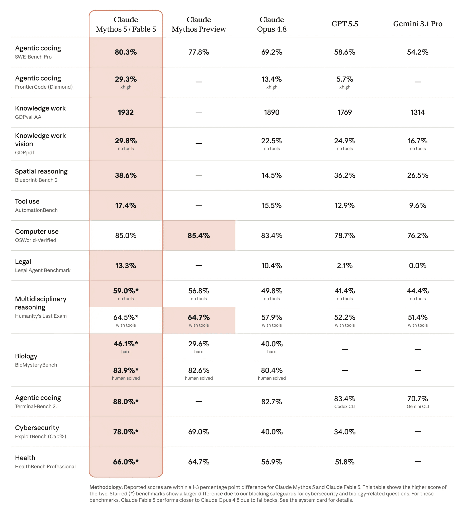
原图 1 · 博客发布的全球基准指标（保留原始图）
博客给出的信号
FrontierCode Diamond
Fable 5 超过 Opus 4.8 的 13.4%。
BenchCAD IoU
覆盖 17,900 个零件、106 个工业族。
指标来自原文；这里关注的是 CAD 相关能力，而非“模型总分”。
| 测试项目（/20） | Opus 4.6 | Opus 4.7 | Opus 4.8 | Fable 5 |
|---|---|---|---|---|
| NEMA 17 | 9.0 | 14.5 | 16.0 | 17.75 |
| V8 engine block | 7.0 | 10.75 | 14.5 | 16.0 |
| 平均响应 | 2:20 | 5:35 | 6:45 | 5:55 |
| 总分（/40） | 16.0 | 25.25 | 30.5 | 33.75 |
原文说明：评分已从“外形验证”升级为更严格的工业审计——原生参数化、算法整洁度与自诊断模块。
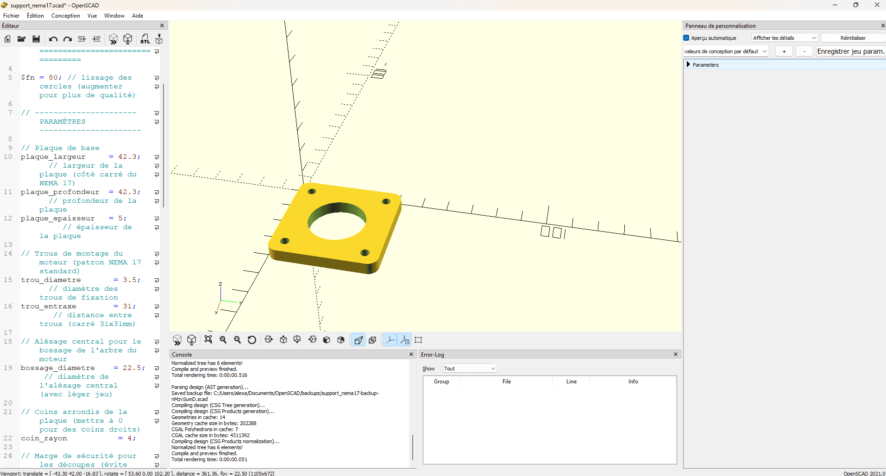
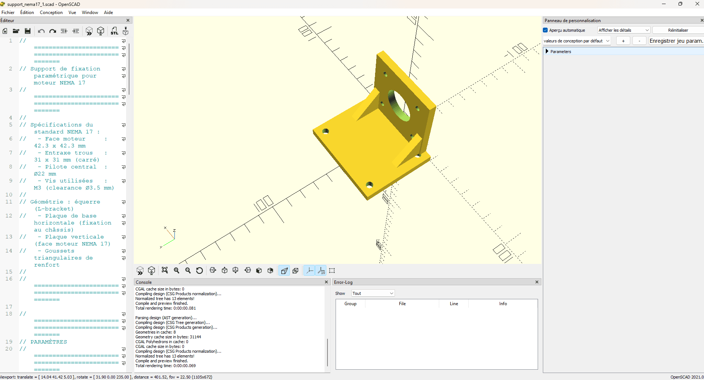
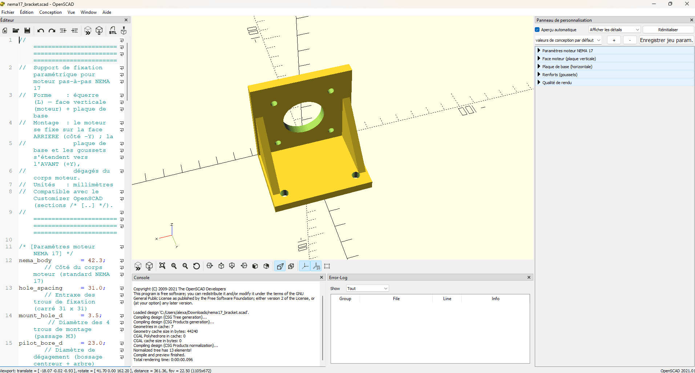
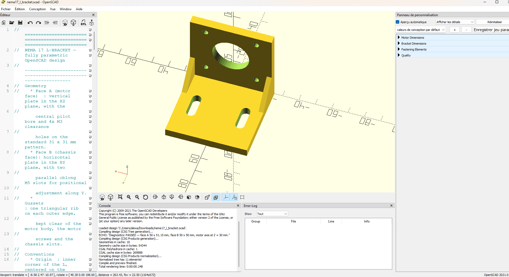
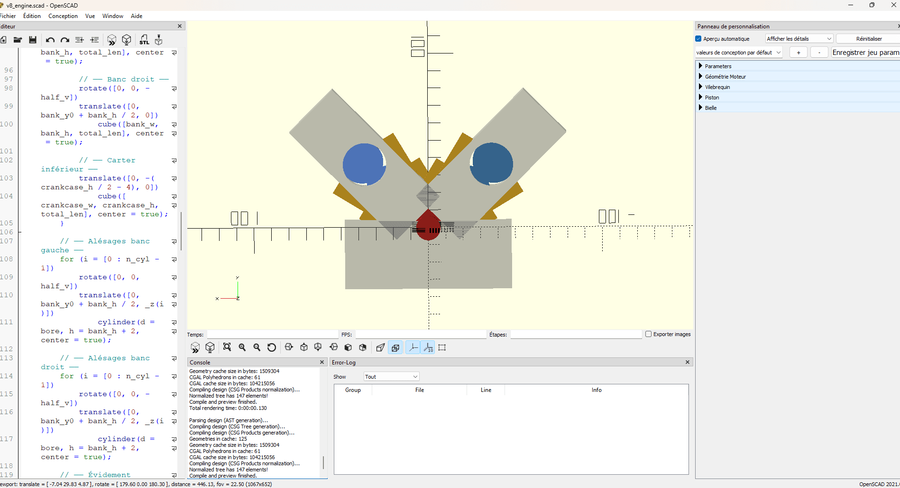
原图 2–6 · 原博客 OpenSCAD 迭代截图，完整保留
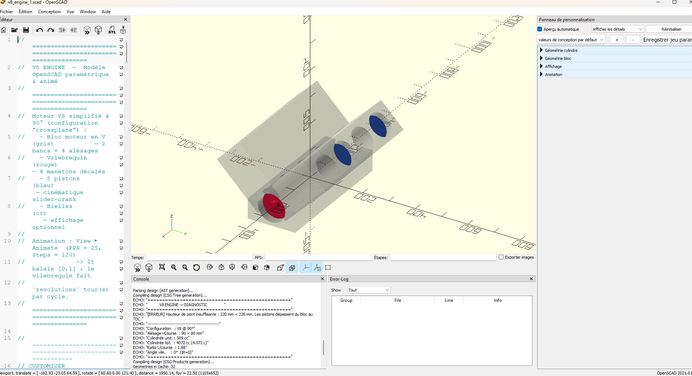
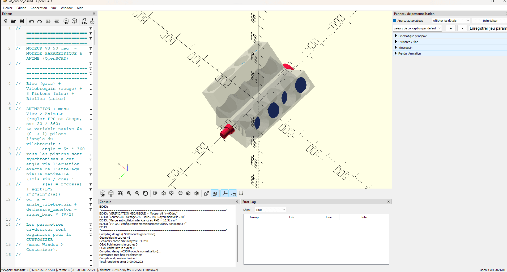
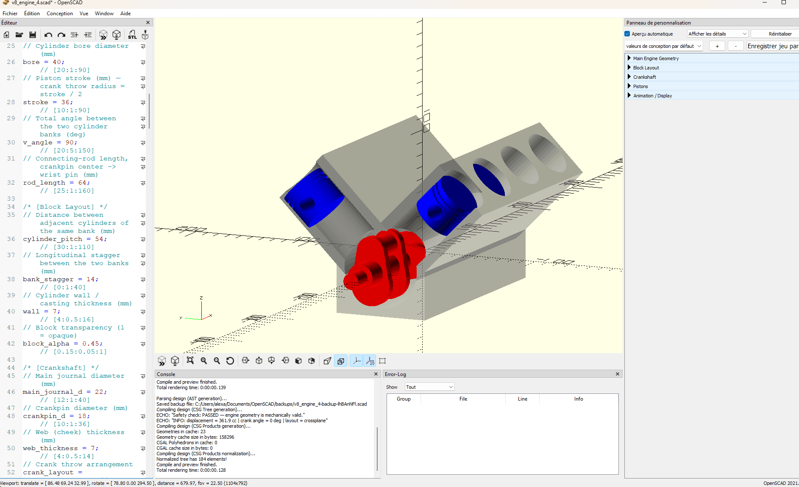
原图 7–9 · 从报错，到发现错误，再到主动避免错误
Fable 5 · 无新增原图
承接原图 9 的技术结论：代码严谨性优先于动画观感。
生成与维护 SOLIDWORKS / Inventor 宏。
自然语言 → 宏 → 可编辑参数模型。
识别尺寸、放置视图、修改图纸。
解释规则、验证概念、支持选型与采购。
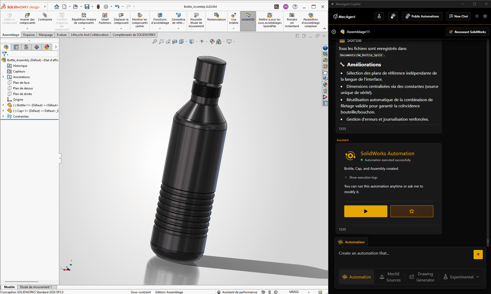
原图 10 · 水瓶、瓶盖与装配约束由宏端到端生成
Text-to-CAD 水瓶测试
深度 API 调用、启发式几何选择、瓶身与瓶盖螺纹记忆，让结果更接近可复用的工业宏。
| 指标（/5） | Opus 4.8 | Fable 5 | 验证重点 |
|---|---|---|---|
| API 集成 | 3.3 | 4.5 | 原生 OpenDoc6 与 fallback |
| 代码稳健性 | 4.3 | 4.8 | try/catch + finally 关闭文档 |
| CAD 逻辑 | 3.1 | 4.0 | 按 bounding box 自适应 |
| 文档与遥测 | 4.1 | 4.5 | [START] / [INFO] / [SUCCESS] |
COM 对象没有显式 Release，生产环境可能留下 ghost SolidWorks 进程。宏上线前仍需人工审查与内存管理。
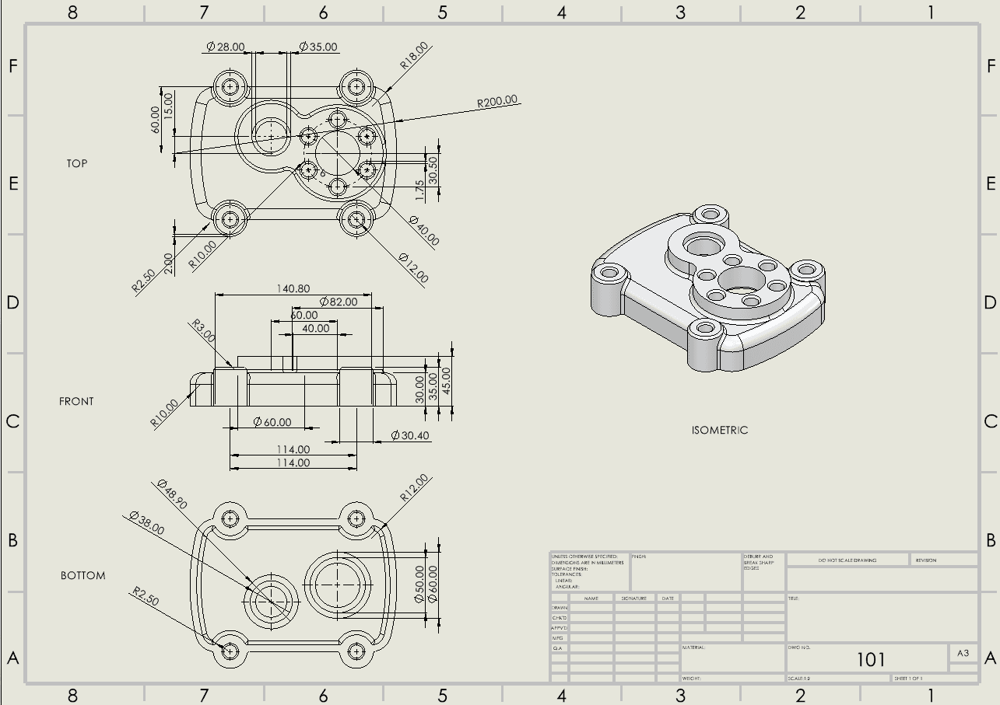
原图 11 · Fast：约 10 秒，标准三视图 + 等轴视图
选择取决于任务：即时验证视觉，或生成包含剖视、GD&T、基准与关联性的制造图纸。
生产级交付物
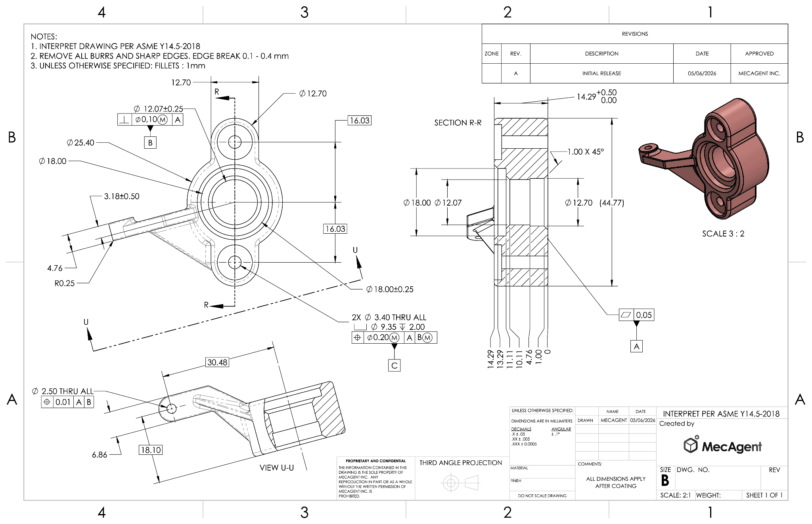
原图 12 · Background：剖视、尺寸、公差与 3D 视图
结论 · AI proposes, engineer decides
重复 CAD 任务、宏和初步制图。
参数化、诊断、API 逻辑和文档。
复杂曲面、COM 清理、FEA 与物理测试。
Fable 5 + MecAgent 1.2，把工程师从低价值重复劳动中释放出来；但最终的安全与可制造性，仍由工程师负责。
来源：mecagent.com · Claude Fable 5 × MecAgent 1.2.0 on CAD